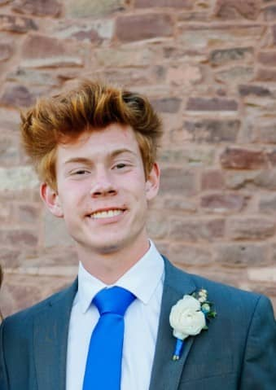
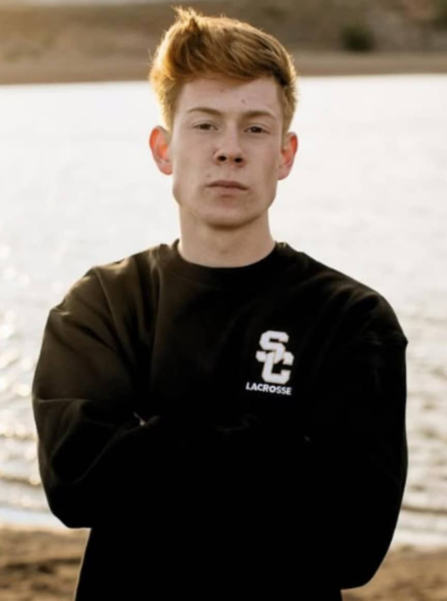
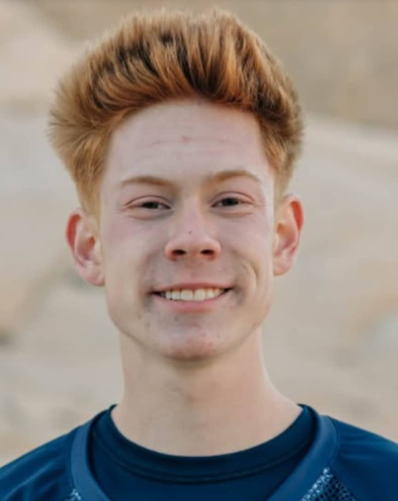

R.J. Stephens
A kind, hardworking, responsible student



Leadership
- American Legion Utah Boys State (2026)
- Speaker at American Legion Post 90 Fall Social Dinner (2026)
- Santa Clara Youth City Council Member-Public Relations Assistant (2025-Present)
- National Honor Society Council Member-Publicity Officer (2026-2027)
- Japan Student Delegate (2023)
- Student Ambassadors (2023-2024)
- Lifeguard for the City of St. George, Utah (2025-Present)
- Church Leadership: Young Men’s President (2023-2024), First Counselor (2025-2026)
Extracurricular
- Piano for 9 years
- Lacrosse Team (2025-2026)
- Cross Country Team (2023-2024)
- Track Team (2024)
- Mountain Bike Team (2022-2023)
- Enjoying the outdoors with my family: camping, hiking, and river rafting